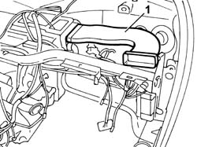

5010B24 UNDER-FACIA AIR DUCTS R R
- Path
- Procedures > 50 AUXILIARY UNITS > 5010 HEATING/VENTILATION - MISCELLANEOUS > 5010B HEATING/VENTILATION AIR PIPES AND DUCTS > 5010B24 UNDER-FACIA AIR DUCTS R R
- Kind
- repair procedure (removal / refitting; the operation number is the code)
- Applies to
- all engines; all production periods
- Interactive page
- https://sloeber94.github.io/elrnDB-fUlss/en/#/179021445
Applies to: all engines; all production periods
STEP | OPERATIONS TO BE CARRIED OUT | TEST RESULTS | ||
|---|---|---|---|---|
0 | PRELIMINARY CHECKS | ALL OK | PROBLEMS ENCOUNTERED | ACTION |
First, check:
| Move on to Step | 1. Level not correct | 1. Top up level | |
2. Leaks detected | 2. Move on to the step involved | |||
3. Presence of engine oil | 3. Change the head gasket | |||
4. Radiator distorted | 4. Replace the radiator | |||
5. Radiator dirty/blocked | 5. Clean/wash the radiator | |||
1 | PLUG SEAL CHECK | ALL OK | PROBLEMS ENCOUNTERED | ACTION |
Check the seal of the expansion tank cap | Move on to Step | Cap defective | Replace the cap | |
2 | CHECK USING DIAGNOSTIC EQUIPMENT | ALL OK | PROBLEMS ENCOUNTERED | ACTION |
Connect the diagnostic test equipment (Examiner or other instruments) to the diagnostic socket:
| Move on to Step | 1. Presence of errors in the control unit | 1. Proceed as instructed by the diagnostic tester | |
2. Operation does not conform | Move on to Step | |||
3 | ENGINE COOLING ELECTRIC CIRCUIT CHECK | ALL OK | PROBLEMS ENCOUNTERED | ACTION |
Check tha the fan power/control line is working properly See E5020 ENGINE COOLING | Move on to Step | Connections not correct | Repair the connections See E5020 ENGINE COOLING | |
4 | FAN OPERATION CHECK | ALL OK | PROBLEMS ENCOUNTERED | ACTION |
Supply the fan directly and check its operation See E5020 ENGINE COOLING | Move on to Step | Fan not working | Replace the fan | |
5 | THERMOSTAT OPERATION CHECK | ALL OK | PROBLEMS ENCOUNTERED | ACTION |
Bleed the cooling systemCheck that the thermostat is working properly | Move on to Step | Thermostat not working | Replace the thermostat Op. 1088C30 THERMOSTAT UNIT - R+R | |
6 | WATER PUMP CHECK | ALL OK | PROBLEMS ENCOUNTERED | ACTION |
Check that the water pump is working properly | Move on to Step | Pump faulty | Change pump Op. 1088C10 WATER PUMP - R + R | |
7 | COOLING SYSTEM LEAKAGE TEST | ALL OK | PROBLEMS ENCOUNTERED | ACTION |
Check the seal of the cooling system | Move on to Step | 1. Faulty seal with visible leaks | 1. Eliminate leaks | |
2. Faulty seal without visible leaks | Move on to Step | |||
8 | HEAD HYDRAULIC SEAL CHECK | ALL OK | PROBLEMS ENCOUNTERED | ACTION |
Check the hydraulic seal of the cylinder head | Move on to Step | Seal not efficient | Restore the seal, replace the head if necessary | |
9 | MONOBLOC HYDRAULIC SEAL CHECK | ALL OK | PROBLEMS ENCOUNTERED | ACTION |
Check the hydraulic seal of the monobloc | Move on to Step | Seal not efficient | Restore the seal, replace the monobloc if necessary | |
10 | CHECK ON CORRECT OPERATION | ALL OK | PROBLEMS ENCOUNTERED | ACTION |
Check that the fault is no longer present | ||||
Applies to: all engines; all production periods
 Removing
Removing
 Refitting
RefittingOp. 5530B56 BATTERY DRIP TRAY COVER - R.R.
- Disconnect the negative battery terminal.
Op. 7040H29 FRONT PILLAR LOWER COVER (ONE), LEFT OR RIGHT - R.R.
- < R1 > [Both]
Op. 7040A45 FACIA RH SIDE COVER - R R
Op. 7040G22 FACIA COMPARTMENT LIGHT SWITCH/BULB HOLDER - R+R
Op. 7040A31 FLAP ASSEMBLY - R R
Op. 7040A44 SEAT INTERIOR GUARD - R R
Op. 7040A68 GRILLE FOR CENTRE DASHBOARD SPEAKER - R.R.
- < R1 > [Both]
Op. 7040A47 ODDMENTS POCKET UNDER DASHBOARD - R.R.
Op. 7040A60 UNDER FACIA TRIM - R+R
Op. 7040A65 PASSENGER COMPARTMENT BOX LOCK , ONE , R R
- < R1 > [Both]
Op. 2125C24 GEAR LEVER KNOB - R + R
Op. 7040A60 UNDER FACIA TRIM - R+R
Op. 7040A26 STEERING COLUMN TRIM - R+R
Op. 5580C18 AIR BAG MODULE - R+R
Op. 4110A10 STEERING WHEEL - R+R FOR REPLACEMENT OR CHECKS
Op. 5550A10 STALK UNIT ASSEMBLY - R+R
Op. 4110A26 STEERING WHEEL ADJUSTMENT PLATES - R.R.
Op. 5010C38 L/H OR R/H SIDE AIR OUTLET (ONE) ON FASCIA - R+R
- < R1 > [Both]
Op. 5010C30 CENTRAL AIR OUTLET ON FASCIA - R+R
Op. 7040A74 TRIM UNDER CONTROL PANEL - R.R.
Op. 5580C22 AIR BAG MODULE PASSANGER SIDE R R
Op. 5010B66 AIR DUCT BETWEEN TIMING CASING AND CENTRE VENT IN DASHBOARD - R.R.
Op. 5580P20 CENTRALINA DEL CONNECT - S.R.
Op. 5580P24 CONNECT CONTROL UNIT SUPPORT - R.R.
Op. 5580P22 CONNECT COOLING FAN - R.R.
Op. 5560B09 INSTRUMENT PANEL WITH CONNECT VIEWER - R.R.
Op. 5010D56 SOLAR SENSOR - R R AFTER CHECKING ELECTRICAL SYSTEM
Op. 7040A39 DEVICE FOR DRIVER`S SEAT SQUAB LUMBAR ADJUSTMENT - R R
- < R1 > [Both]
Op. 7040A69 DASHBOARD COVER UPPER TRIM - R.R.
Op. 7040H30 FRONT PILLAR TRIM - R R
- < R1 > [Both]
Op. 7040A10 L/H OR R/H FRONT SEAT (ONE) - R+R
1. Release the air ducts from the fastenings on the facia support beam and withdraw from the fittings on the air conditioner casing.

Applies to: all engines; all production periods
Refitting
Removing- Position the air ducts by inserting in the connectors on the air conditioner casing.
- Secure the air ducts to the fastenings on the facia support beam.
Op. 7040A10 L/H OR R/H FRONT SEAT (ONE) - R+R
Op. 7040H30 FRONT PILLAR TRIM - R R
- < R1 > [Both]
Op. 7040A69 DASHBOARD COVER UPPER TRIM - R.R.
Op. 7040A39 DEVICE FOR DRIVER`S SEAT SQUAB LUMBAR ADJUSTMENT - R R
- < R1 > [Both]
Op. 5010D56 SOLAR SENSOR - R R AFTER CHECKING ELECTRICAL SYSTEM
Op. 5560B09 INSTRUMENT PANEL WITH CONNECT VIEWER - R.R.
Op. 5580P22 CONNECT COOLING FAN - R.R.
Op. 5580P24 CONNECT CONTROL UNIT SUPPORT - R.R.
Op. 5580P20 CENTRALINA DEL CONNECT - S.R.
Op. 5010B66 AIR DUCT BETWEEN TIMING CASING AND CENTRE VENT IN DASHBOARD - R.R.
Op. 5580C22 AIR BAG MODULE PASSANGER SIDE R R
Op. 7040A74 TRIM UNDER CONTROL PANEL - R.R.
Op. 5010C30 CENTRAL AIR OUTLET ON FASCIA - R+R
Op. 5010C38 L/H OR R/H SIDE AIR OUTLET (ONE) ON FASCIA - R+R
- < R1 > [Both]
Op. 4110A26 STEERING WHEEL ADJUSTMENT PLATES - R.R.
Op. 5550A10 STALK UNIT ASSEMBLY - R+R
Op. 4110A10 STEERING WHEEL - R+R FOR REPLACEMENT OR CHECKS
Op. 5580C18 AIR BAG MODULE - R+R
Op. 7040A26 STEERING COLUMN TRIM - R+R
Op. 7040A60 UNDER FACIA TRIM - R+R
Op. 2125C24 GEAR LEVER KNOB - R + R
Op. 7040A65 PASSENGER COMPARTMENT BOX LOCK , ONE , R R
- < R1 > [Both]
Op. 7040A60 UNDER FACIA TRIM - R+R
Op. 7040A47 ODDMENTS POCKET UNDER DASHBOARD - R.R.
Op. 7040A68 GRILLE FOR CENTRE DASHBOARD SPEAKER - R.R.
- < R1 > [Both]
Op. 7040A44 SEAT INTERIOR GUARD - R R
Op. 7040A31 FLAP ASSEMBLY - R R
Op. 7040G22 FACIA COMPARTMENT LIGHT SWITCH/BULB HOLDER - R+R
Op. 7040A45 FACIA RH SIDE COVER - R R
Op. 7040H29 FRONT PILLAR LOWER COVER (ONE), LEFT OR RIGHT - R.R.
- < R1 > [Both]
- Connect the negative battery terminal.
Op. 5530B56 BATTERY DRIP TRAY COVER - R.R.
- Check the operation of the system using the Examiner or other diagnostic equipment.
Topics linked from this page (29)
- 2125C24 GEAR LEVER KNOB - R + R
- 4110A10 STEERING WHEEL - R+R FOR REPLACEMENT OR CHECKS
- 4110A26 STEERING WHEEL ADJUSTMENT PLATES - R.R.
- 5010B66 AIR DUCT BETWEEN TIMING CASING AND CENTRE VENT IN DASHBOARD - R.R.
- 5010C30 CENTRAL AIR OUTLET ON FASCIA - R+R
- 5010C38 L/H OR R/H SIDE AIR OUTLET (ONE) ON FASCIA - R+R
- 5010D56 SOLAR SENSOR - R R AFTER CHECKING ELECTRICAL SYSTEM
- 5530B56 BATTERY DRIP TRAY COVER - R.R.
- 5550A10 STALK UNIT ASSEMBLY - R+R
- 5560B09 INSTRUMENT PANEL WITH CONNECT VIEWER - R.R.
- 5580C18 AIR BAG MODULE - R+R
- 5580P20 CENTRALINA DEL CONNECT - S.R.
- 5580P22 CONNECT COOLING FAN - R.R.
- 5580P24 CONNECT CONTROL UNIT SUPPORT - R.R.
- 7040A26 STEERING COLUMN TRIM - R+R
- 7040A31 FLAP ASSEMBLY - R R
- 7040A39 DEVICE FOR DRIVER`S SEAT SQUAB LUMBAR ADJUSTMENT - R R
- 7040A44 SEAT INTERIOR GUARD - R R
- 7040A45 FACIA RH SIDE COVER - R R
- 7040A47 ODDMENTS POCKET UNDER DASHBOARD - R.R.
- 7040A60 UNDER FACIA TRIM - R+R
- 7040A65 PASSENGER COMPARTMENT BOX LOCK , ONE , R R
- 7040A68 GRILLE FOR CENTRE DASHBOARD SPEAKER - R.R.
- 7040A69 DASHBOARD COVER UPPER TRIM - R.R.
- 7040G22 FACIA COMPARTMENT LIGHT SWITCH/BULB HOLDER - R+R
- 7040H29 FRONT PILLAR LOWER COVER (ONE), LEFT OR RIGHT - R.R.
- 7040H30 FRONT PILLAR TRIM - R R
- E2010 SIDE LIGHTS / NO. PLATE LIGHTS
- E3010 HORNS